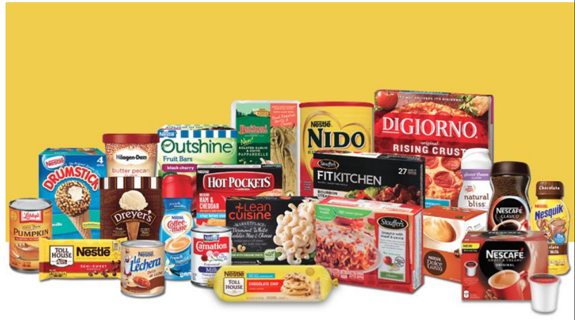
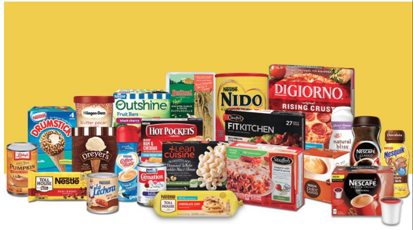
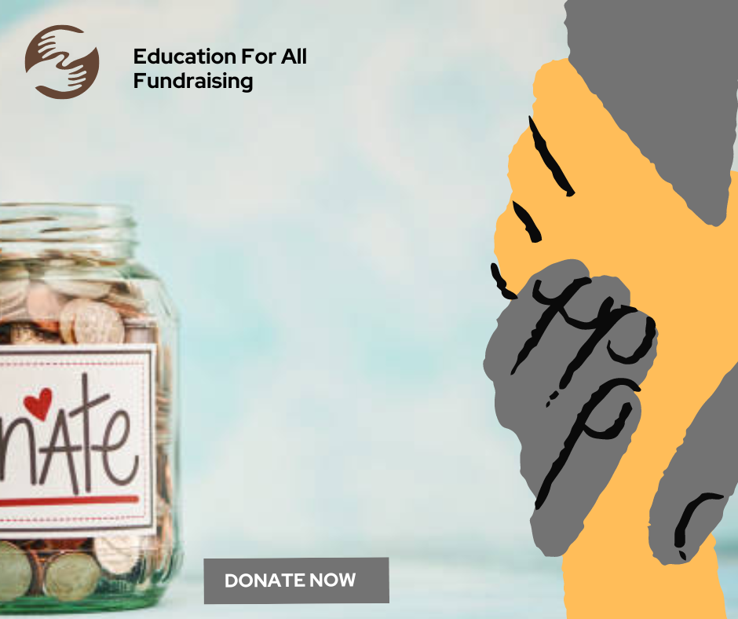

This was quite an interesting project, showing different flights and destinations. An indepth analysis revealed revenue hotspot routes like ORD-LAX, which accounted for the highest revenue generated at 9.63% of total revenue while route ORD-DCA even though with lesser flights, generated about 46.6% of total profits for all flights. Peak period for flights in the year was also noted. Recommendations was given to help Redox Airlines enhance its operational efficiency, maximize revenue generation, and improve overall profitability if implemented. This project was carried out using Microsoft Excel.
 

Nestlé, the largest food company in the world with over 30,000 products wants to expand its business by adding new product lines. However, they wanted to know the performance of their current products. As a Data Analyst, I created a product comparison dashboard to help the company see various products performance over a period, give insights on sales medium to help them make an informed decision on its expansion plans.

Education For All is a charity that organises fundraising and was looking to increase the number of donors in their database. They also needed to increase the frequency and value of donations.Previous years donation and donor data was analysed closely to reveal insights that will inform new strategies which can be employed to help them reach their goal.
>
Check it out!